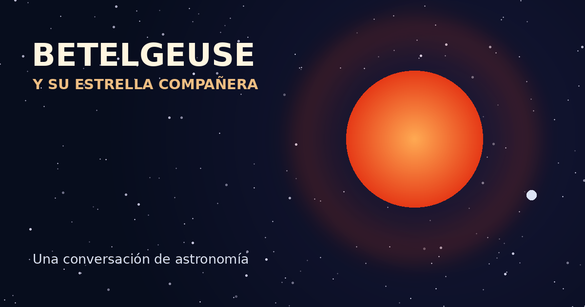

Betelgeuse y su estrella compañera
Exploramos las dimensiones, las temperaturas y la evolución de este sistema estelar, comparándolo con nuestro Sol.
Leer conversación completa ↗
Exploramos las dimensiones, las temperaturas y la evolución de este sistema estelar, comparándolo con nuestro Sol.
Leer conversación completa ↗